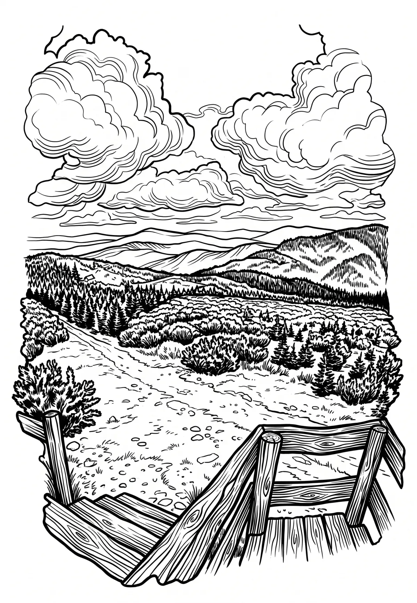

Velká Deštná
Velká Deštná (německy Großkoppe či Deschneyer Koppe) je s nadmořskou výškou 1116 m n. m. nejvyšší horou Orlických hor. Dříve udávaná výška 1115 m n.
Více na Wikipedii
Velká Deštná (německy Großkoppe či Deschneyer Koppe) je s nadmořskou výškou 1116 m n. m. nejvyšší horou Orlických hor. Dříve udávaná výška 1115 m n.
Více na Wikipedii